メニュー
2026/05/27 韓国アプデ 23周年イベント
[重要！] 韓国公式の情報を基にしています。
誤訳や韓国独自仕様の可能性もありますので、予めご了承下さい。

REDSTONEは23周年を迎えました。
長い間REDSTONEを遊び続けられたのは、ゲームを愛してくださった冒険者の皆様のおかげです。
一緒に過ごしてくださったすべての冒険者様に、心から感謝いたします。
多くのご関心とご参加をお願いいたします。
- 期間：2026年5月27日(水)メンテナンス後～2026年7月1日(水)メンテナンス前
23周年中央噴水台の外観変更
- REDSTONEの23周年を迎え、古都ブルンネンシュティグの中央噴水台の外観が変更されます。
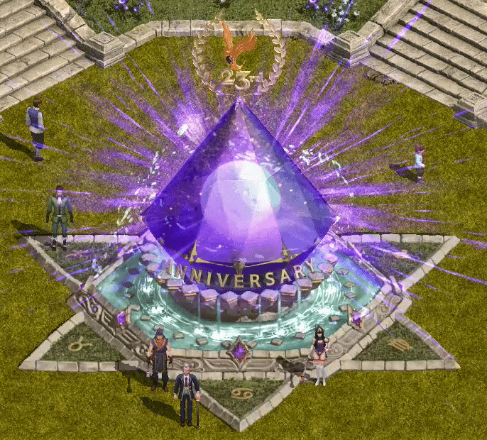
23周年ステップピック（STEP-PICK）イベント
- ミニマップ上部のイベントアイコンをクリックすると、ステップピックイベントを確認できます。
- 各ステップで希望する報酬を選択し、23周年記念コイン30個を使用すると報酬を獲得できます。
- 報酬を受け取ると、次のステップが有効化されます。
- 23周年記念コインは狩り、デイリーミッション、REDSTONEのオーラ、ログインチェックなどから獲得できます。
- 狩りとREDSTONEのオーラ解放で獲得できるコインは、それぞれアイテムごとに週100個までです。制限は毎週月曜日0:00に初期化されます。
- イベントの進行状況は、アカウント内の同一サーバーで共有されます。
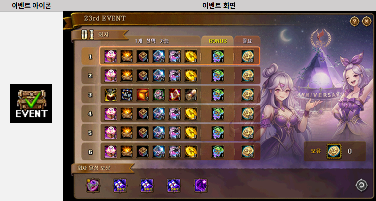
| アイテム | アイテム説明 | 最大重複数 | 有効期間 |
|---|---|---|---|
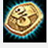 23周年記念コイン |
REDSTONE 23周年を記念するコイン。 23周年イベントで使用して、希望するアイテムを選択できます。 ※取引不可、銀行保管不可 |
255個 | 2026.7.1 メンテナンス前まで |
- キャラクターレベル-100以上のモンスターを討伐すると、一定確率で23周年記念コインを獲得できます。
- キャラクターレベルが2000以上の場合は、キャラクターレベル-50以上のモンスターが対象です。
- ステップピックイベントは全5周目で構成され、各周目には6つのステップがあります。
| 23周年ステップピックイベント - ステップ別選択可能報酬 | |||||||
|---|---|---|---|---|---|---|---|
| ステップ | 報酬1 | 報酬2 | 報酬3 | 報酬4 | 報酬5 | 報酬6 | ボーナス |
| ステップ1 | 研磨スロット 再加工道具箱 1個 |
特製携帯用 開放道具箱 1個 |
オプションお守り箱 1個 |
多次元の結晶 15個 |
魔力インク 75個 |
冒険団コイン 5個 |
23周年ビスベリー 1個 |
| ステップ2 | 研磨スロット 再加工道具箱 1個 |
特製携帯用 開放道具箱 1個 |
オプションお守り箱 1個 |
多次元の結晶 15個 |
魔力インク 75個 |
冒険団コイン 5個 |
23周年ビスベリー 1個 |
| ステップ3 | 研磨スロットロック 加工道具箱[S][E] 1個 |
マエストロの携帯用 開放道具箱[E] 1個 |
神秘のオプション お守り箱[E] 2個 |
模造開放オプション 変換器[E] 2個 |
製錬魔法書[E] 5個 |
レア等級 バッジ図案書 3個 |
23周年ビスベリー 1個 |
| ステップ4 | 研磨スロット 再加工道具箱 1個 |
特製携帯用 開放道具箱 1個 |
オプションお守り箱 1個 |
多次元の結晶 15個 |
魔力インク 75個 |
冒険団コイン 5個 |
23周年ビスベリー 1個 |
| ステップ5 | 研磨スロット 再加工道具箱 1個 |
特製携帯用 開放道具箱 1個 |
オプションお守り箱 1個 |
多次元の結晶 15個 |
魔力インク 75個 |
冒険団コイン 5個 |
23周年ビスベリー 1個 |
| ステップ6 | 研磨スロット 再加工道具箱 1個 |
特製携帯用 開放道具箱 1個 |
オプションお守り箱 1個 |
多次元の結晶 15個 |
魔力インク 75個 |
冒険団コイン 5個 |
23周年ビスベリー 1個 |
- ステップ報酬を受け取ると、追加で23周年ビスベリーを獲得できます。
- 各周目の6つのステップをすべて完了すると、周目達成報酬を受け取れます。
| アイテム | アイテム効果および説明 | 最大重複数 | 有効期間 |
|---|---|---|---|
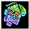 23周年ビスベリー |
60分間、ユニークアイテム生成確率100% 2000レベル以上のキャラクターは、狩り経験値が120分間+23% 2000レベル未満のキャラクターは、狩り獲得経験値が120分間300%増加 熟すまでに23年もかかったという最高品質のビスベリー。 記念として表面に大きく「23」が刻まれています。 ※他の果実系効果と重複します。 ※ただし、同じビスベリー系アイテムとは重複しません。 ※イベント期間中のみ使用できます。 |
255個 | 2026.7.1 メンテナンス前まで |
| 23周年ステップピックイベント - 周目達成報酬 | ||
|---|---|---|
| 周目 | アイテム | アイテム説明 |
| 1周目 | 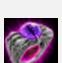 23周年記念リング |
23周年を記念して製作された指輪。ブラックホールの力が染み込み、主に強力な力を吹き込んでくれるという。専用スクロールでオプションを付与できます。 ※各周目ごとに登録できるオプションが決まっています。 一度オプションを選択すると変更できないため、慎重に選択してください。 ※周年記念リングの着用個数制限 1個 |
| 2周目 | 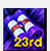 23周年リング専用 1列目オプションスクロール |
23周年を記念して製作された指輪に、オプションを付与できるスクロール。 1列目、2列目、3列目に付与するオプションを選択できます。 ※各周目ごとに登録できるオプションが決まっています。 一度オプションを選択すると変更できないため、慎重に選択してください。 |
| 3周目 | 23周年リング専用 2列目オプションスクロール |
|
| 4周目 | 23周年リング専用 3列目オプションスクロール |
|
| 5周目 | 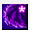 亀裂追跡者絨毯召喚セット |
23周年を記念して製作された魔法の絨毯で、搭乗したまま攻撃できる機能を持つ亀裂追跡者絨毯を召喚できるセット。 使用すると絨毯キットインベントリに変更されるか、既存の絨毯キットインベントリに追加されます。 |
| 23周年記念リング専用オプションスクロール情報 | ||
|---|---|---|
| 1次（1列目）オプション | 2次（2列目）オプション | 3次（3列目）オプション |
| 力 +1 / レベル 5 | 敏捷性 +1 / レベル 5 | 健康 +1 / レベル 5 |
| 知識 +1 / レベル 5 | 知恵 +1 / レベル 5 | カリスマ +1 / レベル 5 |
| 物理攻撃力増加 100% | ポーション回復速度増加 100% | 運 +1 / レベル 5 |
| 攻撃速度増加 35% | ユニークアイテムドロップ率(%) +7% | ポーション回復速度増加 100% |
| 火属性ダメージ増加 5% | 最大HP増加 35% | ユニークアイテムドロップ率(%) +7% |
| 水属性ダメージ増加 5% | 防御力増加 35% | 最大HP増加 35% |
| 風属性ダメージ増加 5% | 最大CP 15%増加 | 防御力増加 35% |
| 大地属性ダメージ増加 5% | 透明 | 最大CP 15%増加 |
| 光属性ダメージ増加 5% | アイテム自動リロード | 透明 |
| 闇属性ダメージ増加 5% | アイテム自動リロード | |
| ポーション回復速度増加 100% | ||
| ユニークアイテムドロップ率(%) +7% | ||
| 全てのスキルレベル +3 | ||
| 周目達成報酬アイテム例 |
|---|
|
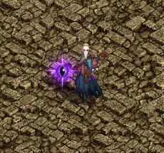 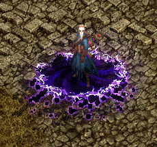 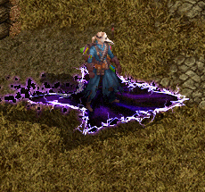 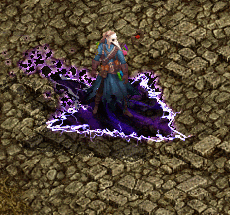 |
23周年デイリーミッションイベント
- デイリーミッションをクリアすると、23周年記念コインを獲得できます。
- 獲得したコインは23周年ステップピックイベント、または23周年イベントショップで使用できます。
- ミッションの種類と内容は、ミッション入場アイコンから確認できます。
| イベントアイコン | ミッション内容 | 詳細内容 | 報酬 |
|---|---|---|---|
| 接続時間維持 | 30分 | 23周年記念コイン 5個 |
|
| 自分のレベル-200以上のモンスター討伐 | 100匹 | ||
| REDSTONEのオーラ解放 | 3回 | ||
| 混沌の大地を完了 | 1回 | ||
| 試練のダンジョンを完了 | 1回 | ||
| アスタロトデイリー討伐を完了 | 1回 | ||
| シュラグデイリー討伐を完了 | 1回 | ||
| ファルコンデイリー討伐を完了 | 1回 | ||
| ゲリオデイリー討伐を完了 | 1回 | ||
| 宝箱(宝の地図)を開く | 1回 | ||
| モンスター討伐によるゴールド獲得 | 100万ゴールド | ||
| 特定文言をワールド叫びで発言 | 1回 |
- デイリーミッションは最大7個までランダムに表示され、1日に最大5個までクリアできます。
- ミッションリストは100,000ゴールドを消費して、1日3回まで更新できます。
- 更新回数は毎日0:00に初期化されます。
- 進行中のミッションとリストは、アカウント内の同一サーバーで共有されます。
- 進行数は毎日0:00に初期化されます。進行中のミッション自体は0:00に初期化されません。
23周年イベントショップ
- イベントショップでは、23周年記念コインを使用して各種アイテムを購入できます。
| イベントアイコン | アイテム | 必要財貨 | 購入制限数 | 有効期間 |
|---|---|---|---|---|
| グロウポーション スフィア[7日] | 80個 | 1個 | 交換後7日 | |
| ミニ大容量光沢剤 | 30個 | 1個 | イベント終了まで | |
| ミニ両面フレーム | 30個 | 1個 | イベント終了まで | |
| ULT研磨スロット再加工道具箱[E] | 155個 | 1個 | - | |
| ワンタッチ3スロット/1開放道具箱[E] | 230個 | 1個 | - | |
| スペシャル等級選択図案書 2個 | 205個 | 1個 | - | |
| 宿命のオプションお守り箱 | 155個 | 1個 | - | |
| 開放オプション変換器[E] 3個 | 155個 | 1個 | - | |
| 製錬コーティング剤[E] 6個 | 130個 | 1個 | - | |
| グランディスの手作り菓子 | 1個 | - | - |
23周年REDSTONEのオーラ＆宝箱バフイベント
REDSTONEのオーラ
- イベント期間中、REDSTONEのオーラの外観が23周年記念シンボルに変更されます。
- REDSTONEのオーラを解放すると、23周年記念コイン1個を獲得し、非規格装備闇商人が出現します。

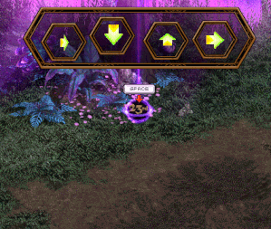
非規格装備闇商人
- 非規格装備闇商人は3種類のうちいずれかでランダムに登場します。
- 登場した種類に応じて、非規格装備闇商人箱を獲得できます。
- イベント期間中は、コクーン闇商人、宝物闇商人、オプション闇商人は登場しません。
| 種類 | 外観 | ドロップ |
|---|---|---|
| 非規格装備闇商人I | 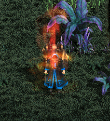 |
非規格装備闇商人箱 1個 |
| 非規格装備闇商人II | 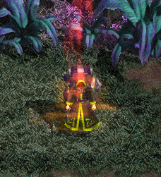 |
非規格装備闇商人箱 2個 |
| 非規格装備闇商人III | 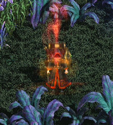 |
非規格装備闇商人箱 3個 |
非規格装備闇商人箱
- 非規格装備闇商人箱を使用すると、非規格装備1種をランダムで獲得できます。
- 獲得したアイテムはインベントリへ即時支給されます。
| アイテム | アイテム説明 | 最大重複数 | 有効期間 |
|---|---|---|---|
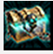 非規格装備闇商人箱 |
闇商人を討伐した後に現れた怪しい箱。 見た目は古いが、なぜか珍しいアイテムが入っていそうだ。 早く確認してみよう。 ※取引不可、銀行保管不可 |
10個 | - |
宝箱バフ
- イベント期間中、すべての宝箱バフの持続時間が1時間から1時間30分に変更されます。
- イベント中に同じ宝箱バフを再適用した場合も、持続時間は1時間30分になります。
23周年出席チェックイベント
- イベント期間中に接続すると、出席チェック報酬を受け取れます。
| 1日目 | 2日目 | 3日目 | 4日目 | 5日目 | 6日目 | 7日目 |
|---|---|---|---|---|---|---|
| 23周年記念コイン 5個 |
みずみずしいシュラベリー 1個 |
オプションお守り箱 2個 |
製錬魔法書[E] 1個 |
完全復活スクロール 1個 |
ステラコクーン[E] 1個 |
ファストフル ヒーリングポーション[E] 3個 |
| 8日目 | 9日目 | 10日目 | 11日目 | 12日目 | 13日目 | 14日目 |
| 23周年記念コイン 5個 |
魔力インク 50個 |
赤い光[取引不可] 1個 |
炎の石 1個 |
ユスピナの クリスタル[E] 1個 |
異界の強化石 2個 |
宝物狩人の 羅針盤IV 1個 |
| 15日目 | 16日目 | 17日目 | 18日目 | 19日目 | 20日目 | 21日目 |
| 23周年記念コイン 5個 |
たわわなシュラベリー 1個 |
オプションお守り箱 2個 |
製錬魔法書[E] 1個 |
完全復活スクロール 1個 |
ステラコクーン[E] 1個 |
ファストフル ヒーリングポーション[E] 3個 |
| 22日目 | 23日目 | 24日目 | 25日目 | 26日目 | 27日目 | 28日目 |
| 23周年記念コイン 5個 |
魔力インク 50個 |
赤い光[取引不可] 1個 |
炎の石 1個 |
ユスピナの クリスタル[E] 1個 |
異界の強化石 2個 |
宝物狩人の 羅針盤IV 1個 |
- 出席チェック報酬は、報酬アイコンを直接クリックすると受け取れます。
- 報酬はアカウントごとに1回受け取れます。
- 出席チェックは毎日0:00から受け取れます。
- 28日目が最終報酬で、以降の追加報酬はありません。
[引用元] 韓国公式ページ（23周年イベント）